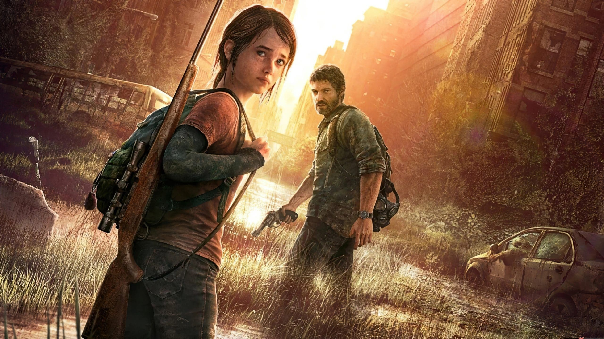

The Last of Us é uma série distópica da HBO baseada na franquia de jogos de videogame de mesmo nome criada por Neil Druckmann. O drama narra um futuro pandêmico que foi devastador para a humanidade, deixando os seres humanos à beira da extinção.